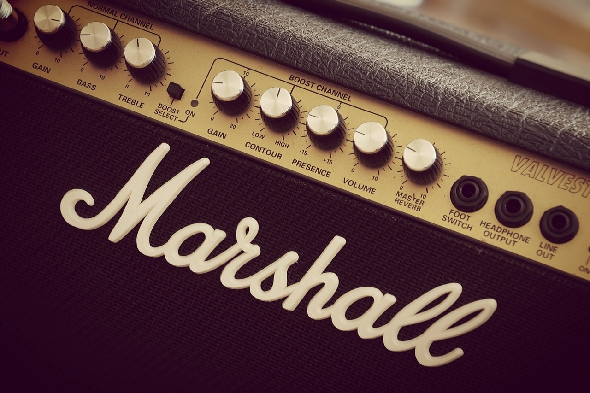
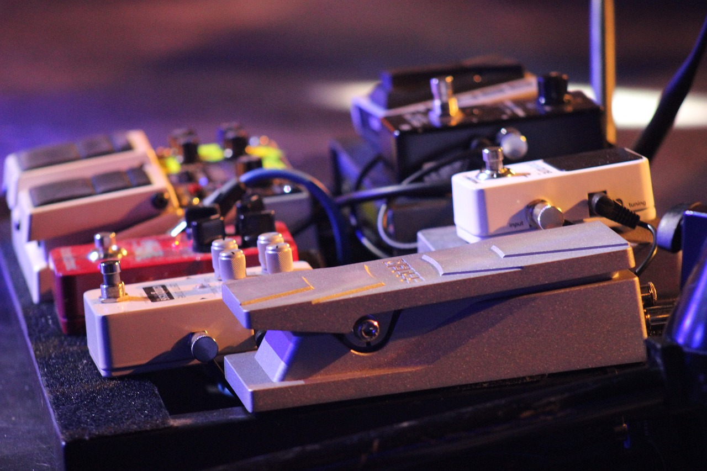
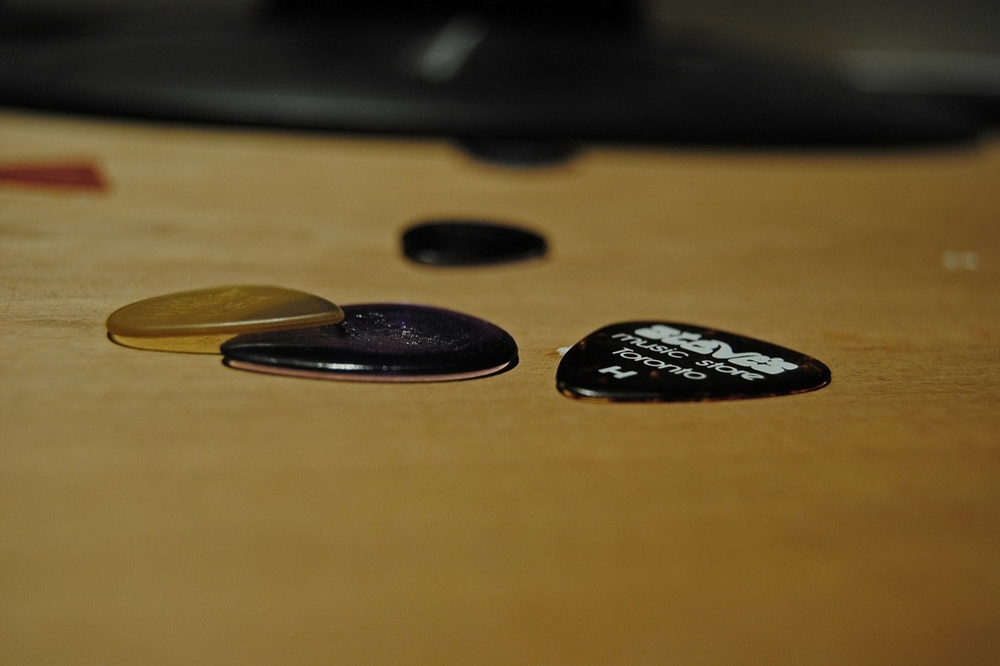

Amps
Before choosing an amp it is best to decide what kind of sound you are looking for and where it will be used. For beginners, a low wattage practice amp is great. If you are interested in playing blues, jazz, or classic rock a Fender Twin Reverb is good starting point. If you enjoy hard rock and metal, MESA/Boogie and Marshall are both great options.

Effect Pedals
Effect pedals allow you to expand the sound of your electric guitar. The most popular pedals are distortion/overdrive, modulation pedals such as chorus and phaser, and echo effects such as reverb and delay.

Picks
Picks come in many colors, shapes, and thicknesses. The best way to decide what kind of pick you prefer is to try an assortment of styles and thicknesses.